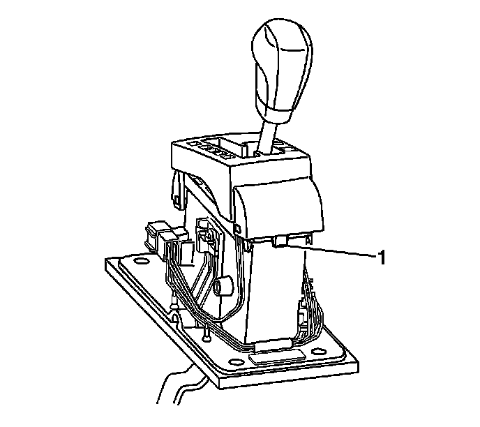
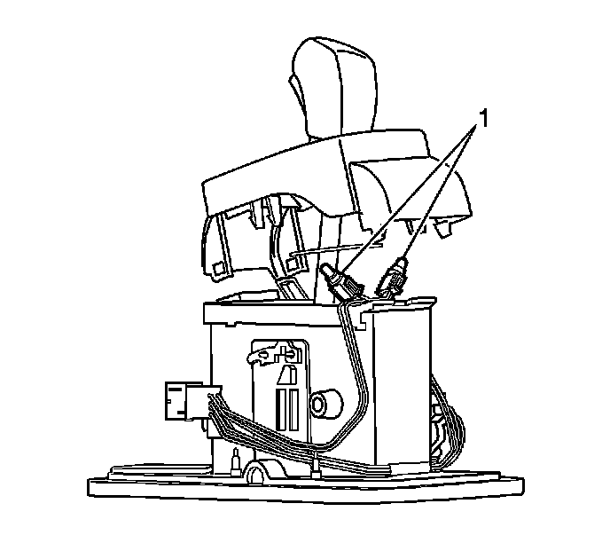

Transmission Floor Shift Control Indicator Lamp Replacement
Transmission Floor Shift Control Indicator Lamp Replacement
Removal Procedure
1. Remove the shifter bezel. Refer to Console Shift Lever Bezel Replacement (Left Hand Drive) (Service and Repair)Console Shift Lever Bezel Replacement (Right Hand Drive) (Service and Repair) .

2. Release the tabs (1) on the bottom of the shifter position indicator.

3. Raise the indicator cover in order to access the bulbs mounted on the bottom of the indicator cover.
4. Turn the bulb socket (1) in order to release it from the indicator cover.
Installation Procedure
1. Locate the bulb socket (1) into the indicator cover.
2. Turn the bulb socket (1) in order to secure it to the indicator cover.
3. Lower the indicator cover onto the shifter assembly.
4. Push the cover in order to secure the tabs (1) on the bottom of the shifter position indicator.
5. Install the shifter bezel. Refer to Console Shift Lever Bezel Replacement (Left Hand Drive) (Service and Repair)Console Shift Lever Bezel Replacement (Right Hand Drive) (Service and Repair) .